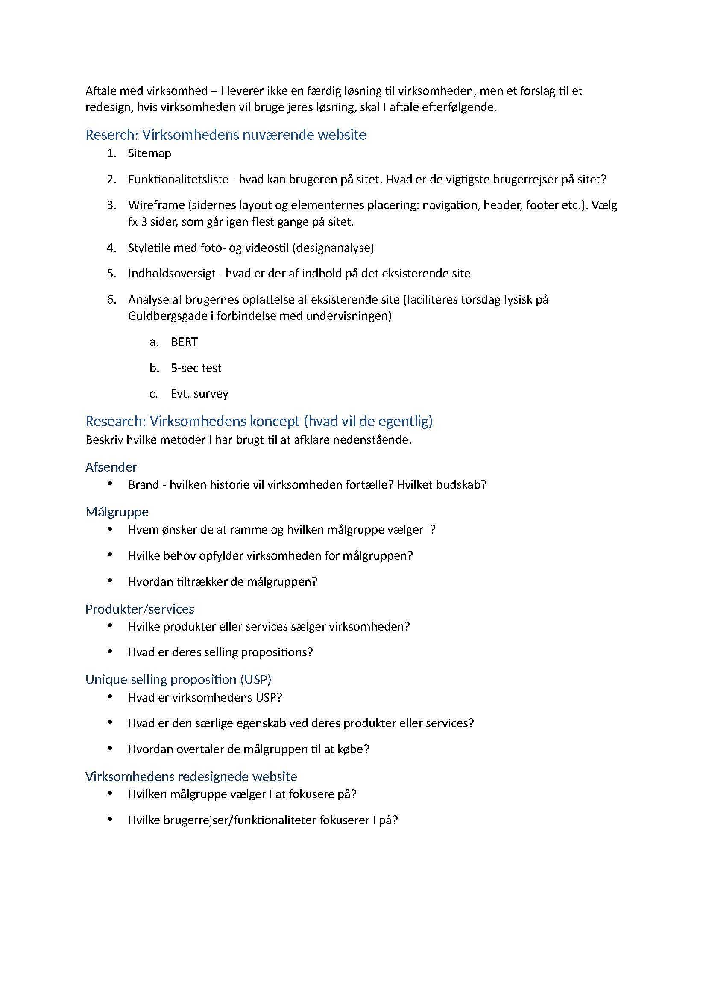
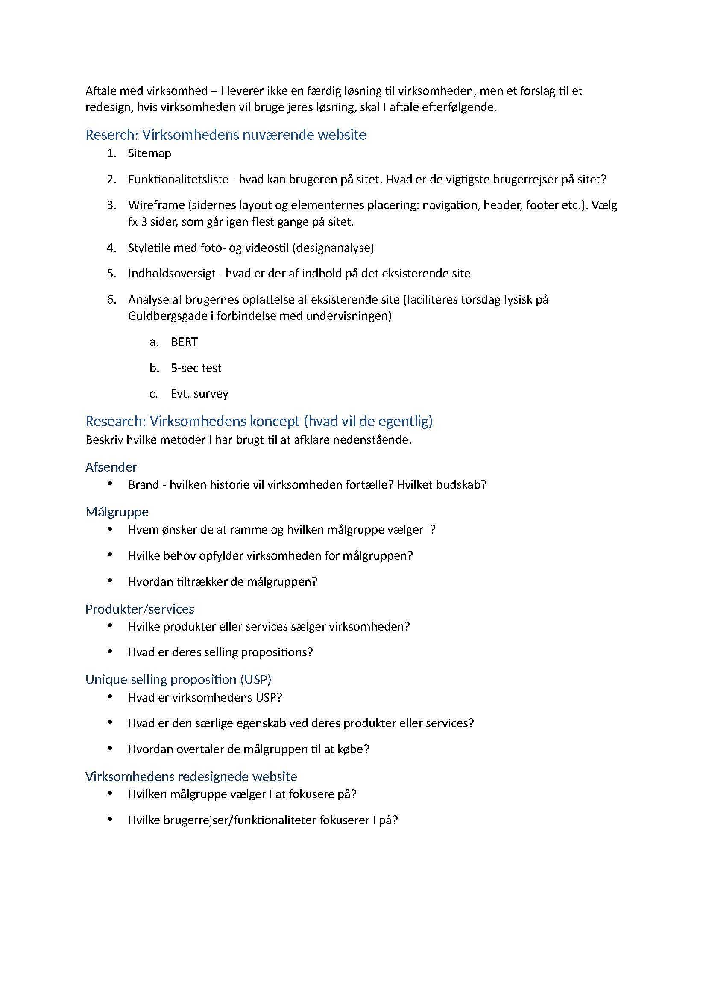
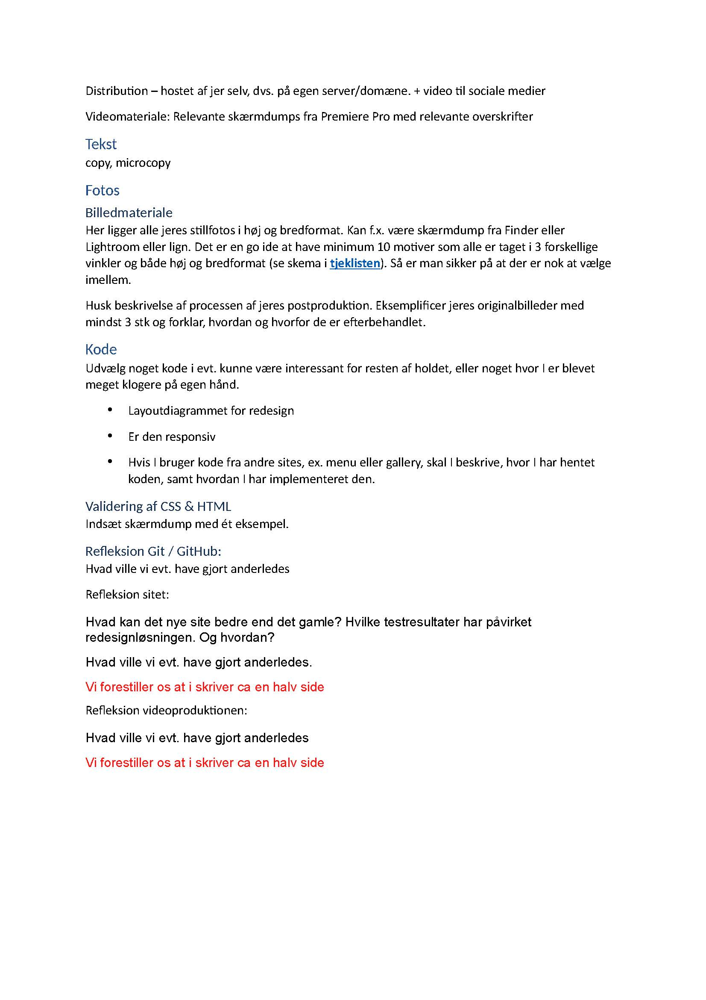
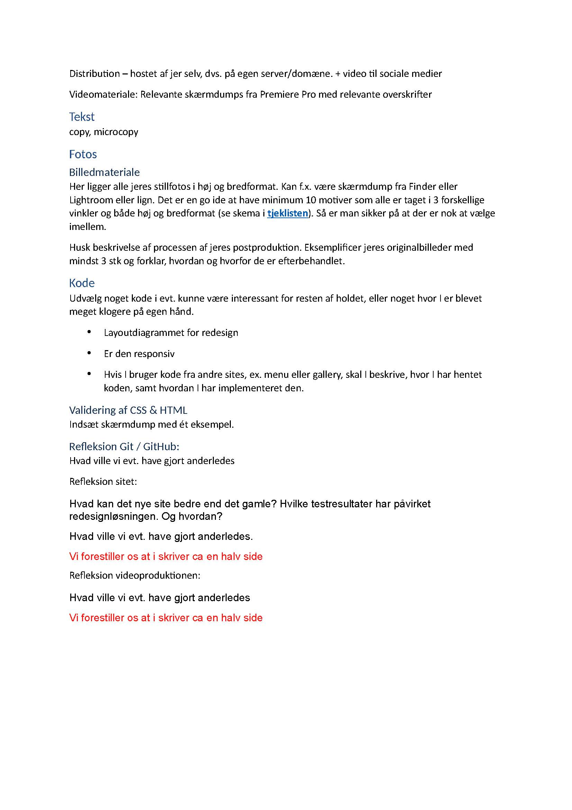

T2
T2
Pilotsite
Beskrivelse
I opgaven “pilotsite” var målet en website, der præsenterer en video. Det var en selvstændig opgave, der blev lavet på baggrund af gruppeinterviews. Jeg anvendte bl.a. HTML, YouTube, layoutdiagram, webfront, VSS og premiere. Jeg lærte bl.a. om filformater, videoredigering, videokodning, formidling, videoplatforme, storyboard, interviewstil, klippeteori og b-Roll.
Process
Anvendt font proxima_regular, format woff
@font-face { font-family: "proxima_novaregular"; src: url("proxima_nova_font-webfont.woff") format("woff"); font-weight: normal; font-style: normal; }
Layoutdiagram
Videooptagelse fra et studie på Amager, MP4 fil, blev lagt på youtube.
Vi brugte to telefoner og en mikrofon.
Vi tog billeder af ting, der skulle bruges i videon.
Vi skulle bruge billedformatet wepd.
Redesign af American Pie Company
Læringsmål
Gruppeopgave. Jeg anvendte bl.a. HTML, YouTube, layoutdiagram, webfront, CSS og premiere. Jeg lærte bl.a. om filformater, videoredigering, videokodning, formidling, videoplatforme, storyboard, interviewstil, klippeteori og b-Roll.
Process
Videoen blev filmet i butikken på Skindergade
Vi brugte to telefoner og mikrofon til optagelse
Video af interviewet med Dorte Prip, MP4 fil
Videoen blev redigeret i audition
Wireframe
Et eksempel på vores wireframe af American Pie`s redesignede hjemmeside.
_Side_1.jpg)
Sketch
Eksempel på Sketch til vores redesign af hjemmesiden. Dette er et udpluk af "håndarbejde"

Proces
Vi brugte et procesdokument til redesigne og researche American Pies hjemmeside.

 

 
